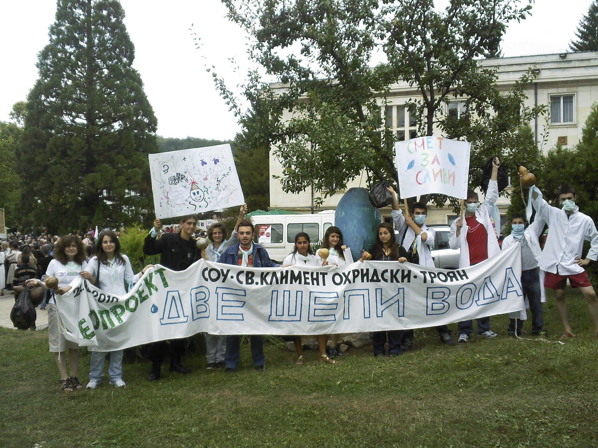

Ние сме екип от млади хора, решени да разчупим границите на собственото си пространство и да го превърнем в обща територия, където да споделяме отговорността си за състоянието на планетата.
Съвремието ни, лишено често от пъстротата на истински ценни красиви неща и моменти и потънало дълбоко в сянката на материалното битие, предполага всеки от нас да претърпи личностно развитие към промяна в начина на мислене и маниера на живот.

Етап „Две шепи вода” е свързан с грижата и тревогата за водата в началото на нейния път към хората – планинските извори. След натрупаните задълбочени изследвания на водите в Троянския Балкан, мониторинг и оценка на антропогенното влияние върху тях, ние добихме смелостта да се опитаме да постигнем напредък към едно ново интелигентно отношение към водата. Предприехме мащабна акция за промяна отношението на хората към водата и по-разумното използване на този незаменим ресурс. Усилията ни бяха насочени към нова гледна точка, а именно въздействието на водата върху човека. Човек не трябва да се чувства господар на водата, а да живее заедно с нея на Земята... Част от анализите на водите направихме в училищната лаборатория, а за стопроцентовата им прецизност получихме съдействие от ,,Актавис” - Троян. Компонентите, които изследвахме в състава на водите са: pH, електропроводимост, количество разтворен кислород, желязо, нитрити, нитрати, манган, хлоридни йони, алуминий, амониев йон.